让关系在空间里发生
走位不是把演员摆得好看，而是让谁靠近、谁退、谁挡住谁变成画面信息。先在地上标门、椅子和摄影机，再让演员用一个动作穿过这段距离。
拍一条全景回放：如果观众能只看身体就说出现在谁更有权力，走位成立；如果必须靠台词解释，重排。
边界
不要为了构图让人物站成海报。身体不动，关系也不会动。
现场
在地上标出门、椅子和摄影机的位置。让演员从门走到椅子，在镜头前停两秒。先拍一条全景，检查谁挡住了谁。
DIAGRAM / BLOCKING
走位：谁靠近、谁退

怎么做
位置先标出来，再让人用一个动作穿过空间；最后用全景检查关系是否读得出来。
- 在地上标出门、椅子和摄影机的准确位置。
- 让演员从门走到椅子，在镜头前停两秒，不拿台词。
- 先拍一条全景，回放确认谁挡住谁、距离是否说出了关系。
别踩
别让人物为了构图站成海报；身体一假，关系就假。
图片说明：本页封面、图解与步骤图是编辑示意或结构图，不是本页实测照片，也不能当作器材测试证据；AI 辅助生成的图会在图注标出。判断器材或画面，以正文的测试条件与现场记录为准。